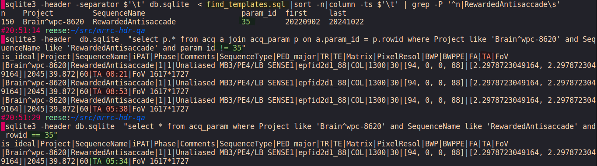

mrqart.acq2sqlite¶
Convert db.txt into a sqlite database.
Functions
Column names used by dcmmeta2tsv.py and schema.sql. |
|
|
|
|
Template should match get_header. |
Classes
|
Convenient SQL queries for tracking dicom headers/metadata. |
- class mrqart.acq2sqlite.DBQuery(sql=None)[source]¶
Convenient SQL queries for tracking dicom headers/metadata.
This class is a poorly implemented, ad-hoc/bespoke ORM for database defined in
schema.sql- CONSTS = ['Project', 'SequenceName', 'iPAT', 'Comments', 'SequenceType', 'PED_major', 'Phase', 'TR', 'TE', 'Matrix', 'PixelResol', 'BWP', 'BWPPE', 'FA', 'TA', 'FoV'][source]¶
CONSTSis a list of expected aquisition-invarient parameters. The values of these attributes should be the same for every acquisition sharing aProject × SequenceNamepair (across all sessions of a Project).We consider the acquisition to have a Quallity Assurance error when the value of any of these parameters in a single acquisition fails to match the template.
For example
TRfor task EPI acquisition identified bySequenceName=RewardedAntiinProject=WPC-8620should always be1300ms.
- check_acq(d)[source]¶
Is this exact acquisition (time, id, series) already in the database?
- Parameters:
d (dict[str, str]) – All parameters of an acquisition
- Returns:
True/False if dict params exist
- Return type:
bool
- dict_to_db_row(d)[source]¶
insert a dicom header (representative of acquisition) into db :param d: a single acquisition to add to DB :return: True if added or already exists
- Parameters:
d (dict[str, str])
- Return type:
bool
- find_acquisitions_since(since_date=None)[source]¶
Retrieve all acquisitions with AcqDate greater than the specified date.
- Parameters:
since_date (str | None) – Date string in ‘YYYY-MM-DD’ format; defaults to yesterday if None.
- Returns:
List of acquisition rows with AcqDate > since_date.
- Return type:
list[Row]
TODO: add join with params? Sort
- find_acquisitions_since_filtered(since_date=None, project_like='%', seq_like='%')[source]¶
Like find_acquisitions_since, but filter in SQL by Project and SequenceName. Only returns acquisitions whose acq_param matches the LIKE filters.
- Parameters:
since_date (str | None)
project_like (str)
seq_like (str)
- find_recent_per_pair(since_date=None, project_like='%', seq_like='%', per_pair_limit=3)[source]¶
Return up to N most-recent acquisitions per (Project, SequenceName) since date. Greatly reduces volume while still catching fresh issues. Requires SQLite with window functions (ROW_NUMBER()).
- Parameters:
since_date (str | None)
project_like (str)
seq_like (str)
per_pair_limit (int)
- get_template(pname, seqname)[source]¶
Find the template from
template_by_count. Seemake_template_by_count.sql- Parameters:
pname (str) – protocol name
sqname – sequence name
seqname (str)
- Returns:
template row matching prot+seq name pair
- Return type:
Row
- is_template(param_id)[source]¶
Check if param id is the ideal template.
- Parameters:
param_id (int)
- Return type:
bool
- most_recent(project='%')[source]¶
Find a projects most recent scan in the database :param project: project name. default to all via wildcard
%:return: timestamp string of most recent seen scanUsed by
mrqart.mrrc_dbupdate()to set per project find -newermt- Parameters:
project (str)
- Return type:
Row
- param_rowid(d)[source]¶
- Parameters:
d (dict[str, str]) – dicom headers
- Returns:
acq_param(new or existing) rowid identifying unique set ofCONSTS- Return type:
int | None
Find or insert the combination of parameters for an acquisition. Using
CONSTS, the header parameters that should be invariant across acquisitions of the same name within a study.>>> db = DBQuery(sqlite3.connect(':memory:')) >>> with open('schema.sql') as f: _ = [db.sql.execute(c) for c in f.read().split(";")] ... >>> # db.sql.execute(".read schema.sql") >>> example = {k: 'x' for k in db.CONSTS} >>> db.param_rowid(example) 1 >>> db.param_rowid(example) 1 >>> db.param_rowid({**example, 'Project': 'b'}) 2 >>> str(db.param_rowid({})) 'None'